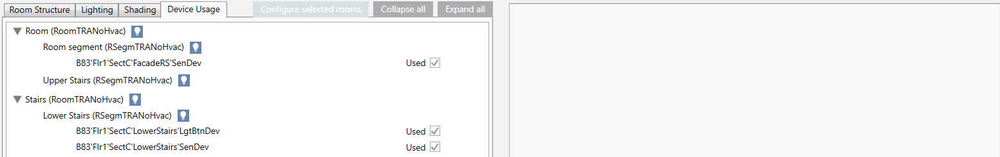
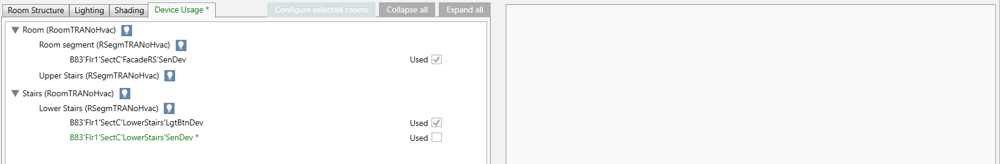
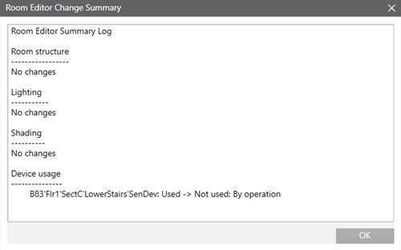
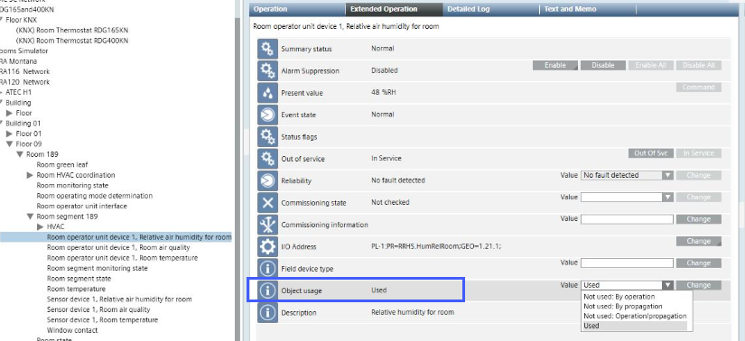

Configure Room Operator Unit to Unused
Scenario: A change in room configuration means that room operator unit S1 or S2 is no longer needed or needed again by a room segment. Enabling or disabling the device can be accomplished in Desigo CC without the engineering tool.
Disabling the unit also changes the calculation by room control. In the event of more than one room operator unit, the temperature is derived from the average; for luminance, the lowest value.
| Temperature | Lighting |
| Temperature | Lighting |
S1 | 22°C | 220lx |
| 22°C | 220lx |
S2 | 25°C | 200lx |
| --- | --- |
Value | 23.5°C | 200lx |
| 22°C | 220lx |

If cleared, no additional configurations are required in the room operator unit for Reconfigure Lighting Control and Reconfigure Shading Control. This simplifies re-selection at a later date if the segment if re-added to the original room.
- The Configure Room Management are fulfilled.
- You made a Additional Procedures of the existing configuration. You can restore an incorrect configuration using the export file with Additional Procedures to the last saved configuration.
- Select Project > [Network name] > [Building] > [Floor].
- Select the room.
- Drag the room to the room information list.

- Select the Device Usage tab.

- Clear In use to disable the room operator unit.
- The changed data as well as the Device Usage tab is displayed in green.

- Click Save
 .
. - The changed configuration is written to the automation station.
- (Optional) Click Summary log to display the changes.

The cleared room operator unit is not deleted from the project data base. The engineering tool is required to permanently clear the device (Desigo Building Automation Pane). In Desigo CC, the check box Do not import unused points must be selected in the Desigo Automation tab.
The change applies to the Object usage property.
